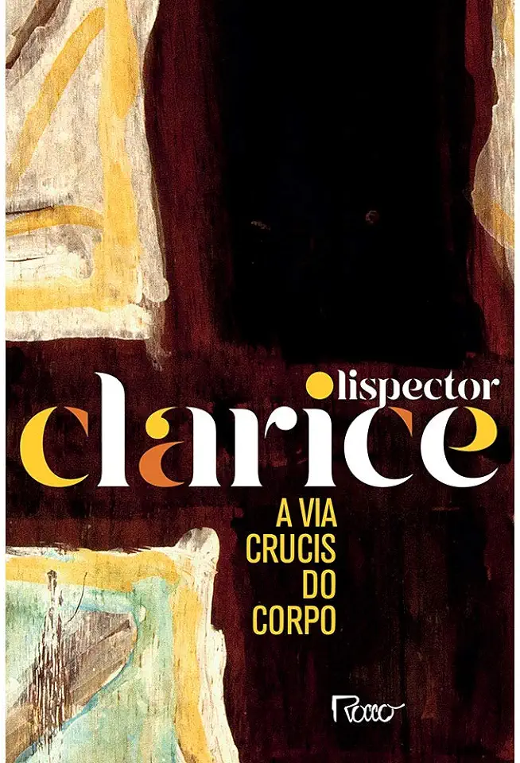

A Via Crucis do Corpo é uma coletânea de contos de Clarice Lispector que explora a complexidade do corpo humano, seus desejos, fraturas e êxtases, revelando a condição humana de forma poética e introspectiva.
"Nós todos somos fracassados, nós todos vamos morrer um dia! Quem pode dizer com sinceridade que se realizou na vida? O sucesso é uma mentira."
Publicado pela primeira vez em 1974, o livro reúne 13 contos precedidos pelo prefácio “Explicação”, no qual Clarice comenta que escreveu as histórias sob encomenda, mas com liberdade criativa, e que qualquer indecência presente não seria de sua responsabilidade. Inicialmente, a autora considerou usar o pseudônimo Cláudio Lemos, mas acabou assinando com seu próprio nome, mantendo sua voz literária singular.
Título
A via crucis do corpo
Autora
Clarice Lispector
Publicação
1974
Editora
Rocco
Gênero
Coletânea de contos
Páginas
80